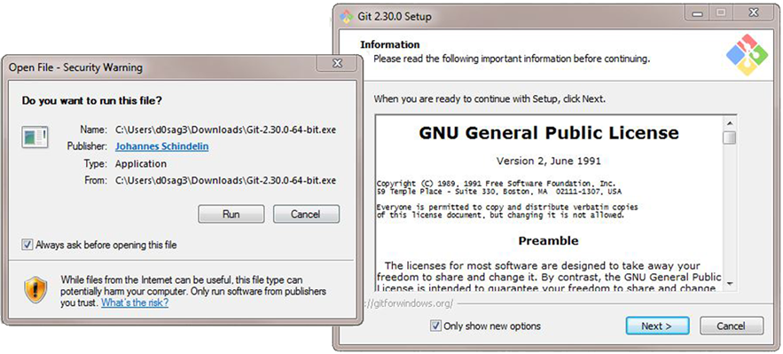

Written by: Antonius Torode - 1/6/2021
As stated on their website, "Git is a free and open source distributed version control system designed to handle everything from small to very large projects with speed and efficiency." Git allows you to take files you are working on, have multiple versions, revert to older versions, manage current versions, and keep consistent files across all of your workspaces and machines. For the purposes of our need, git is easily integrated to use with github, and allows us to update a github.io webpage with ease! You can visit the git website to learn more about it and view documentation and more here: https://git-scm.com/
This page is set up in parts for various operating systems. When following this tutorial, ensure that you are looking at the sections with the heading of the operating system you are using (i.e. Linux, Windows, Mac, etc).
Head over the the git homepage located at https://git-scm.com/. Press the "Download for Windows" button.
A download window will appear. Select "Save File".
Run the executable that appears and follow through the setup windows. You can leave all options as they are by default or change them if desired. Once this completes, that is it, you now have git installed on your computer!
Congratulations, you have successfully installed git on Windows (assuming you followed all above steps)!
Open a terminal window and enter the following commands (pressing enter after each one to run it).
$ sudo apt-get update
$ sudo apt-get install git
Verify that git is installed by checking to see if it can tell you the git version number with the following command.
$ git --version
Configure your git username and email using the following commands. Fill in your actual username and email in the below commands accordingly.
$ git config --global user.name "Username"
$ git config --global user.email "email@domain.com"
Congratulations, you have successfully installed git on Linux (assuming you followed all above steps)!